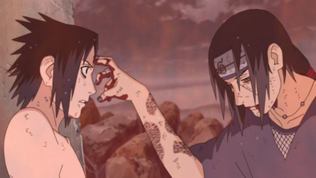

Top 15 lutas em animes
Se você é fan de anime vai reconhcer alguma dessas grandes lutas em animes, lembrando que a lista e sobre os animes que eu assisti.Há uma boa chance de a maioria das pessoas se tornarem fãs de anime por causa de uma cena de luta incrível que viram. Talvez tenha sido de Dragon Ball , talvez tenha sido de outra série de anime, mas o fato de a animação não ter realmente um orçamento para efeitos especiais faz uma grande diferença. Eles não são impedidos pelas restrições da ação ao vivo e podem fazer tudo e se divertir com suas lutas.
15)Dragon Ball Z - Freeza x Goku
Depois de mais de uma quinzena de episódios de lutas contra Freeza, onde os Guerreiros Z vão sendo um a um derrotados, mortos, gravemente feridos e derivados; eis que Goku chega na última hora para a batalha decisiva.O embate ultrapoderoso entre os dois perdura por muitos outros episódios e Goku acaba alcançando o nível de Super Saiyajin pela primeira vez nesta batalha de tão furioso que fica com Freeza após a morte de Kuririn. O herói derrota o vilão e poupa sua vida, tentando fazê-lo entender que estava errado, mas o orgulho do Imperador do Universo é maior.E então Goku se vê obrigado a matar Freeza. Simplesmente inesquecível.
14)nanatsu no taizai - escanor x estarossa
Quando os Dez Mandamentos voltaram, eles fizeram uma visita ao Reino de Liones, e cabia somente para os Sete Pecados Capitais e aos Cavaleiros Sagrados lutar contra eles. O mandamento da Benevolência de Estarossa tornou Ban e outros Cavaleiros Sagrados impotentes. Tudo parecia perdido até que Lord Escanor caminhou de forma majestosa até Estarossa, mostrando que ele não sentia rancor daquele ser, e sim pena.
13)naruto shippuden - sasuke x itachi

Uma das reviravoltas mais surpreendentes da série envolvem os irmãos Itachi e Sasuke -- e a situação entre os dois demorou muitos, mas muitos episódios para ser resolvida. Quando os Uchiha finalmente se enfrentam em um duelo mortal, Itachi dedica seus últimos segundos para colocar seu dedo na testa de Sasuke, algo que ele fazia quando seu irmão era criança. Foi difícil conter a emoção, ainda mais porque Sasuke ainda não sabia que tudo o que Itachi tinha feito, foi para proteger ele e Konoha. Melhor luta?
12)bleach - ichigo x ulquiorra
Ichigo vs ulquiorra a luta mais legal de Bleach porque ulquiorra foi o oponente mais complicado de vencer que Ichigo enfrentou ulquiorra mostra a sua segunda forma e também se mostra muito superior a ichigo que usa sua verdadeira forma hollow e se transforma em Vasto Lorde dando continuidade a uma luta ainda mais incrível e por fim derrotando o ulquiorra
11)boruto - sakura e sasuke x uchiha shin
Durante a série Boruto , Sakura Haruno não aparece muito, mas quando o faz, ela o faz com um estrondo. Sua luta contra Shin, o usuário artificial do Sharingan, prova que ela manteve sua força de monstro mesmo depois de se tornar mãe. Sakura usa sua incrível força e seus punhos para tratar Shin como um saco de pancadas para ajudar a superar suas manipulações mentais – o que é um movimento incrivelmente estratégico da parte dela. Com a ajuda de seu marido, Sasuke, eles são capazes de tirar Shin usando o Rinnegan e alguns golpes bem colocados.
10)naruto - naruto x pain
O combate contra Pain certamente entra pra lista de melhores lutas de Naruto. Depois dos Seis Caminhos destruírem Konoha, matarem Jiraiya e Kakashi, como Naruto conseguiria vencer este adversário?Com o Modo Sábio e tudo o que havia sido reunido de informações sobre este temível adversário, e a luta não decepcionou nem um pouco.É verdade que a animação em alguns momentos deixou a desejar, mas este é um dos pontos mais altos do anime.
9)demon slayer - tanjiro x rui
Por fim, temos a última e uma das melhores lutas da primeira temporada de Demon Slayer. Tanjiro e Nezujo enfrentaram Rui, o Demônio Lua Inferior Cinco. A animação ficou absurdamente boa, bem como todos os movimentos e golpes. É onde também vemos um vislumbre da lendária dança do Deus do Fogo.Além disso, essa luta ainda contou com um gostinho das habilidades de Giyu Tomioka.
8)dragon ball z - Gokux jiren
A segunda luta entre Goku e Jiren foi repleta de ação e num nível nunca antes exibido em Dragon Ball Super. Além do combate ter sido excelente, a animação do final do Torneio do Poder foi simplesmente soberba, coroando os fãs de Dragon Ball Super com talvez a melhor luta já vista em qualquer anime da história, além de um final completamente inesperado: Goku e Freeza unindo forças para derrotar Jiren.
7)boku no hero - Deku x Muscular
Talvez, seja uma das batalhas mais tensas e agonizante do anime. Em primeiro lugar, devido à Individualidade do vilão. Muscular, a partir de sua Peculiaridade, pode aumentar as suas fibras musculares, aumentando sua força e velocidade, podendo até saltar seus músculos para fora. Assim, o vilão parecia quase imbatível. Em segundo, Izuku, mesmo com os 5% do One For All, não consegue enfraquecer o vilão. Muito pelo contrário, Muscular parece cada vez mais forte e invencível. Depois de apanhar muito, quando Deku acha que irá morrer pelas mãos de Muscular, Kota, com uma pequena distração, abre espaço para Deku usar 1.000.000% do One For All em Muscular.
6)naruto - rock lee x gaara
orque vocês sabiam que uma batalha não podia faltar nessa lista!
A luta que fez muita gente começar a assistir Naruto chega a ser dolorosa de se ver.Mesmo em uma aparente desvantagem, Rock Lee vai ao seu limite para tentar derrotar Gaara. O jovem ninja de sobrancelhas grossas passa a maior parte da luta tentando vencer a defesa praticamente impenetrável de seu oponente, mas quando o faz deixa todos em êxtase!Lee demonstra todo seu poder e dá uma verdadeira surra em Gaara, mas, exausto, é derrotado em uma das cenas mais impactantes que vimos.Em todos os pequenos detalhes, Lee X Gaara é uma das melhores batalhas de todo o anime.
5)boku no hero - Endeavour x nomu
Em termos de combate puro, Endeavour vs. High End provavelmente não é a melhor luta. Mas o que atrai o espectador para uma cena de ação? O combate de tirar o fôlego faz parte disso, mas as apostas que estão sendo estabelecidas desempenham um papel igualmente importante em um bom anime de ação. Até agora, Endeavour era simplesmente o herói vaidoso número 2 que era visto como um idiota. Mas contra o High End, a verdadeira determinação do Endeavour está em exibição. Ele tem que superar a antiga versão de si mesmo, para provar que ele é capaz de permanecer no lugar como o Herói Número 1 agora que All Might acabou. Trabalhando com Hawks enquanto a sociedade observa impotente, as pessoas finalmente recebem um raio de esperança de acreditar que tudo poderia realmente estar seguro novamente.
4)boku no hero - Deku X Overhaul
A luta entre Midoriya e Overhaul é uma das mais notáveis de todo o anime. Neste confronto, que acontece após Mirio e Nighteye segurarem a barra contra o vilão, vemos Deku indo ao limite (literalmente, porque ele ativa o 100% do One for All) para proteger a garota Eri e derrotar o líder da Shie Hassaikai. Ostentando força e agilidade nunca antes vistas em Deku, o jovem herói esmaga Kai Chisaki, que também não facilita a luta. O vilão se funde ao Preceito da Morte Rikiya Katsukame, que o deixa com um físico homérico. Sob outras circunstâncias, seria impossível imaginar que Deku o derrotaria.
3) boruto - naruro x sasuke x inshiki
Uma das lutas mais aguardadas de boruto, simplesmente por conta com os 2 maiores ninjas é o vilão da kara, o nível de coreografia desta batalha está incrível, mesmo se você já tiver visto essa batalha no manga vai ficar surpreendido no anime
2)boku no hero - all might x one for all
a melhor luta de Boku no Hero. O confronto entre All Might e All for One não é apenas um espetáculo de poderes incalculáveis, mas também o último brilho de All Might antes da aposentadoria forçada. Com dificuldades em manter a Individualidade ativa para enfrentar All for One, All Might consegue segurar a última chama do One For All (seguindo a voz da mentora Nana Shimura) e esmagá-lo no chão com o memorável e inesquecível United States of Smash. A cereja no topo do bolo é quando o herói aponta para a câmera e diz "Da próxima vez, será você", se referindo a Midoriya. Fique arrepiado e chore só de lembrar desta cena.
1) boruto - naruto x sasuke x momoshik
Se há uma luta que todos precisam ver, é esta. Não é apenas o epítome do que as lutas de anime shonen deveriam ser, mas também não há nada mais emocionante do que assistir Naruto e Sasuke se unirem mais uma vez para proteger aqueles que eles amam e amam.Com a habilidade de Sasuke de empunhar Rinnegan e Sharingan e o uso perito de Naruto dos Seis Caminhos e da Forma de Besta com Cauda, eles são capazes de mudar o rumo da batalha contra Momoshiki. No entanto, em uma incrível demonstração de força, é Boruto que realmente dá o golpe mortal, tirando o membro mais forte do Clã Otsutsuki.